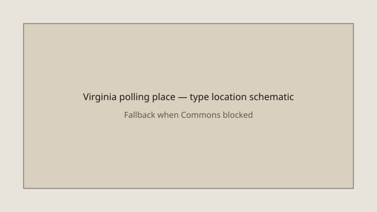

Virginia · elections · 18 September 2026
Early in-person voting for the 3 November 2026 midterms begins in Virginia.

What is agreed across desks
The Virginia Department of Elections announced that early in-person voting for the 3 November 2026 general election began on Friday, 18 September 2026, in localities whose general registrar offices would be closed on Saturday the 19th. The official 45-day early-voting period continues through Saturday, 31 October. Registered voters may cast ballots at designated early-voting locations in their locality upon presentation of an acceptable form of identification.
Contests on the ballot include a United States Senate seat, all eleven Virginia seats in the U.S. House of Representatives, three proposed amendments to the state constitution, and various local races and referendums depending on the locality. New for 2026 is a statutory requirement that early voting be offered on the second and third Sundays before Election Day in addition to the existing Saturday availability.
What is only a quote or interpretive framing
Commentary that links the early-vote opening to ongoing federal litigation over mail-ballot rules is contextual. The Supreme Court and lower courts have addressed executive and legislative efforts concerning absentee and mail voting; those cases remain separate from the administrative fact that in-person early voting has opened under existing state law.
Mechanism and history a reader needs
Virginia expanded no-excuse early voting in recent election cycles. The 45-day window is set by state statute. Local registrars administer the locations; the Department of Elections publishes lists of early-voting sites and accepted identification. Curbside voting is available for voters with disabilities and for those over age 65 who request it.
Midterm elections historically produce lower turnout than presidential years. Early voting has grown as a share of total ballots in Virginia and nationally. Whether 2026 follows that trend will be measurable only after the close of the early period and Election Day canvass.
What the story is not
The opening of early voting is not a prediction of turnout, partisan outcome, or the final resolution of mail-ballot litigation. It does not alter voter-registration deadlines or the requirement that a voter be registered in the locality where the ballot is cast.

Source articles and scores
| Outlet | Headline | T | N | C |
|---|---|---|---|---|
| Virginia Dept. of Elections | Early voting for 2026 November general election begins Sept. 18 | 99 | 0 | 100 |
| Virginia Mercury | Early voting begins in Virginia, as Trump mail-ballot restrictions remain blocked | 94 | −10 | 95 |
| VPM | 2026 VPM Voter Guide: How to Vote in Virginia | 96 | 0 | 100 |
| AP (via multiple) | Early voting begins in US midterm elections that could flip control of Congress | 93 | 0 | 98 |
Images: Wikimedia Commons type exterior of Virginia State Capitol via Special:FilePath. Caption states it is not a 2026 polling-place photograph. Local SVG as second image and onerror fallback. No crossorigin attribute.